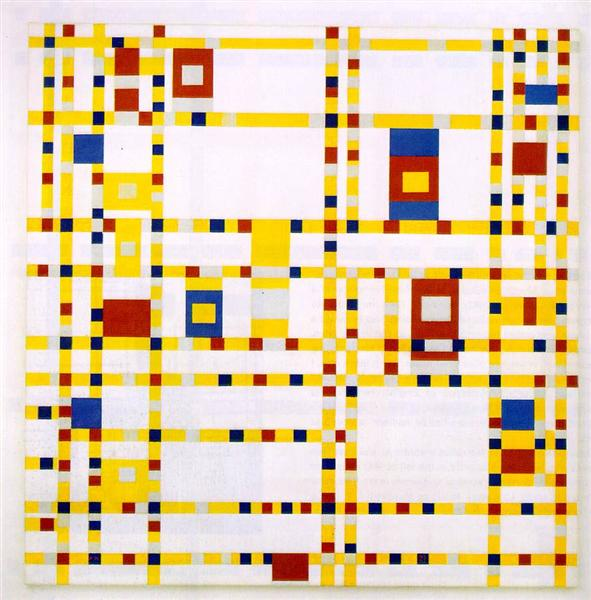
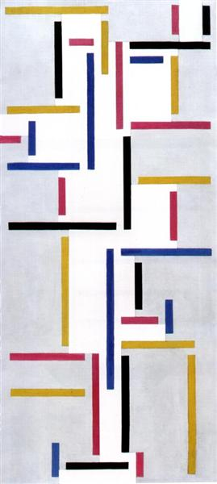

Неопластицизм
B начале 20 века (1917-1920 гг.) в Голландии сформировалось художественное направление основанное на философии дуальности мира. Проявление дуальности в взаимоотношении Земли и Солнца, белого и черного создавалось в первую очередь в живописи с помощью базовых элементов – прямых линий, плоскостей и прямоугольников, исключительно чистых цветов спектра (красный, синий, желтый) и только на белом или черном фоне.
Базовые элементы могли пересекаться с друг другом строго под прямым углом. Эти линии соответствуют упрощенным образам оси Земли – горизонтальные линии и оси Солнца – вертикальные линии; линии должны быть строго перпендикулярных друг другу. Так последователи неопластицизма пытались раскрыть красоту через логику и упрощение форм.
Создание простых геометрических форм и абстрактных линий с таким контекстом получило развитие в живописи, архитектуре и дизайне. Основоположник неопластицизма голландский абстракционист Пит Мондриан – художник реалист, который так увлекся теорией кубизма и математической структурой Вселенной, что перенес их в свои картины, заменил чувственные природные формы на геометрию. За ним последовали другие, художники, архитекторы и дизайнеры, объединившись в художественную группу «Стиль» (De Stijl).
Питер Мондриан
Питер Корнелис Мондриан — нидерландский художник, который одновременно с Кандинским и Малевичем положил начало абстрактной живописи. Мондриан призывал к «денатурализации» искусства, к отказу от естественных форм и переходу к чистой абстракции. Начиная с 1913 года, картины Мондриана развивались в сторону абстрактных матриц, состоящих из чёрных горизонтальных и вертикальных линий. Постепенно расположение линий на холсте упорядочилось до такой степени, что они стали представлять собой правильные решётки с ячейками. Ячейки закрашивались основными цветами, то есть красным, синим и жёлтым. Таким образом, структуру картины образовывали дихотомии цвет — не-цвет, вертикаль — горизонталь, большая поверхность — малая поверхность, единение которых должно было символизировать равновесие сил в гармонии мироздания.

Тео ван Дусбург
Тео ван Дусбург — нидерландский художник, архитектор и скульптор, теоретик искусства, один из основателей группы «Стиль» и художественного направления «неопластицизм». Вместе с Питом Мондрианом организовал движение абстрактного искусства «Стиль» (De Stijl), программу и основные идеи которой выразил в издаваемом им художественном журнале того же названия. Основой взглядов ван Дусбурга была попытка, объективную гармонию произведения искусства свести во всех формах к определённым геометрическим элементам. Эту теорию ван Дусбург широко пропагандировал во время путешествия по Германии, Австрии и Чехословакии в 1917 году. Эти новые принципы вскоре оказали значительное влияние на развитие архитектуры, литературы, графики и музыки.

Где смотреть: работы Пита Мондриан и Тео ван Дусбурга в Муниципальном Музее Гааги.